Manali Khardung La Cycle Expedition
The perfect quest for anyone looking to push their limits
Available Batches

Brief Description


Brief Itinerary
Detailed Itinerary
Day 1
Briefing and Practice in Jagatsukh (1,951M)
Duration: 3 hours
Stay: Hotel
Upon reaching Manali and checking into our hotel, we spend the day at leisure and gear up for the briefing session in the evening. Information on how to reach Manali can be found here. In the evening, our expedition leader will take us through important details, safety and health pointers that we should bear in mind throughout the expedition. We are then introduced to our mountain bikes, which will take us all the way to Ladakh in the next nine days. The expedition leader then explains a few basics about the bike before we take it for a test ride.
It is important to get a good feel of the mountain bike before we begin our expedition in order to ensure that we have a smooth experience. In the event that you face any discomfort with the saddle or any other aspect of the bike, it is best to bring it to the notice of the expedition leader so that it can be adjusted to your needs. Once we are all back from the test ride and confident about our bikes, the expedition leader takes us through the route and how each day is going to look so that we have a broad understanding of what to expect.
Post this, we eat a fulfilling meal and get a long night’s sleep before we leave for what can be called an adventure of a lifetime!
Day 2
Jagatsukh (1,951M) to Marhi (3,360M) (Click to View GPS data)
Distance: 37.5 km
Duration: 8-9 hours
Stay: Dome Shape Tents
We start off our long expedition towards Ladakh around 9 A.M. after a heavy breakfast. Today, we cycle to Marhi, a small village on the way to Rohtang Pass, covering a distance of 37.5 km. We drive through the towns around Manali into lush green coniferous forests, taking the road that leads to Rohtang Pass. Today’s ride is challenging with the entire stretch being an uphill climb all the way to Marhi. It is important that we are thoroughly prepared to be able to complete the ride. There are chances of rain on this stretch, thus keeping our rain covers and gear handy prove to be useful.
As we climb through the turns and bends, we get a bird’s eye view of the towns below and panoramic views of the Himalayas. Numerous seasonal waterfalls can be seen on the mountains as a result of recent rainfall or melting snow from higher up. The scenery we encounter today is a treat to the eyes with bright green from the forests, dark blue from the skies and the foaming white from the waterfalls creating a colorful palette to enjoy.
Since we gain a significant amount of altitude today, it is extremely important that we remember to hydrate and eat sufficient food in order to allow our bodies to acclimatise properly.
We reach Marhi around 5 in the evening. The tents would have been set up; hot snacks await us after a long day’s ride. We spend the evening with our fellow riders and get ample rest for tomorrow’s challenge.
Day 3
Marhi (3,360M) to Sissu (3,130M) via Rohtang La (3,978M) (Click to View GPS data)
Distance: 51 km
Duration: 6-7 hours
Stay: Camping
Today we encounter our very first high mountain pass in this expedition! We ride 16 km up from Marhi to Rohtang Pass (3,980 M) and then 23 km down to reach a small village, where we stop for lunch. From there, it is a gradual 12 km with small ups and downs all the way to Sissu. Today is comparatively easier with a long patch of downhill cycling and also the gradual bits. However, the initial climb to Rohtang Pass can be challenging given the altitude gain. Although the ascent is not too steep, the air gets thinner here, making it difficult to perform strenuous physical activities.
The landscape remains green almost until we reach Rohtang top. But as we keep moving higher up, we can notice the reduction in treeline and the increasing appearance of dry mountains. At Rohtang top, we get panoramic views of snowcapped peaks in the distance who do their bit to remind us how far we have come. We stop here for a few minutes and move on to the most thrilling part of today’s ride. The downhill ride is easy on the legs and the stretch is completed rather quickly. Make sure to enjoy it while it lasts as we glide through towering mountains that surround us. It is however important to be in control of the mountain bike on downhill patches. As easy and enjoyable as it might seem, we should be able to halt the bike if required and slow down at the bends in order to avoid any mishaps.
We break for lunch a little past a checkpost at Koksar, which marks the end of the descent. We continue our journeyto Sissu after recharging ourselves with a heavy lunch. Sissu is located in the Lahaul and Spiti district of Himachal Pradesh. We reach Sissu between 4-5 P.M. having cycled a long distance today. Our stay for the night will be in Swiss tents with beds and blankets to keep us warm.
Day 4
Sissu (3,130M) to Jispa (3,200M) (Click to View GPS data)
Distance: 55 km
Duration: 6-7 hours
Stay: Hotel
It might feel difficult to get out of the warm blankets but today’s journey is absolutely worth it! We cycle from Sissu to Jispa, through Keylong and cover a distance of 55 km. Jispa is a quiet village with just a handful of houses and stores with basic supplies. The first stretch till Tandi is easy, starting with around 10 kms of gradual ups and downs and then 15 kms of downhill riding. Notice how the dry terrain has fully taken over the landscape, hinting that we are slowly entering the cold desert region. The remaining distance is predominantly an uphill climb with 7 kms of downhill right before we reach Jispa. Today’s ascent is difficult and can be extremely challenging in the scorching sun. As always, it is important to keep hydrating and taking small breaks to have snacks in order to maintain your energy levels.
We ride through Keylong with the dry mountains accompanying us throughout. As we are nearing Jispa, Mt. Lady of Keylong comes into sight on our right side. She is a majestic 6000M peak and is a favourite among mountaineers.
We reach Jispa around 3 in the afternoon. Our stay for the night is at a local homestay with comfortable beds and blankets. We also have access to attached bathrooms and hot water to freshen up. We spend the evening having hot snacks, enjoying the landscape and also giving our legs some much needed rest.
Day 5
Jispa (3,200M) to Zingzingbar (4,270M) (Click to View GPS data)
Distance: 36 kms
Duration: 7-8 hours
Stay: Camping
We leave for Zinzingbar after a good night’s sleep at the homestay and a sumptuous breakfast. Today is going to be exciting but also physically strenuous at the same time. A significant part of the stretch is an ascent, some of it steep and the rest of it gradual in nature. The 6 km ascent to upper Zingzingbar to reach our campsite for the night is the most challenging, especially at that altitude under the direct heat of the sun. Hydration is key and so is finding your rhythm to be able to complete the stretch comfortably.
We pass through Darcha, a small town with a checkpost and local dhabas. We make our way further up the Manali-Leh highway to reach Deepak Tal, a pristine blue lake nestled amongst the dusty mountains. We break here to get some rest and snack on something before moving on to Zingzingbar. The road curves along the Bhaga river with the arid landscape becoming all the more prominent. On clear days, the skies are deep blue with not a cloud in sight, almost as if someone forgot to paint them.
We stop for lunch at lower Zingzingbar and get ready for the final ascent for the day. We reach upper Zingzingbar around 5 P.M. and treat ourselves to the hot snacks prepared for us. We spend the night in tents and gear ourselves up for the ride to the second high mountain pass in the expedition!
Day 6
Zingzingbar (4,270M) to Sarchu (4,290M) via Baralacha La (4,850M) (Click to View GPS data)
Distance: 50 kms
Duration: 7-8 hours
Stay: Swiss Tents
The second high mountain pass of the expedition, Baralacha La, awaits us at a massive height of 4,850M! We make our way from upper Zingzingbar to reach Baralacha La, which is a long ascent of 16 kms on our mountain bikes. From the pass, we are faced with an adventure-filled downhill ride, through off roads and streams that breach the highway all the way to Sarchu. The road conditions today keep varying with well laid roads in some parts and roads which are under construction or maintenance in others. Cycling, particularly downhill, on offroads could be extremely challenging given the pieces of gravel that are strewn around. It is important to be mindful of the road and maintain balance in such conditions.
As we cycle to Baralacha La, we get to see the grandeur of the mountains around us. We have come a long way and also have a long way to our destination! The views from Baralacha La are breathtaking to say the least. We make a quick stop there before moving on. A little before Baralacha La, we come across Suraj Tal, another Himalayan lake nestled amidst the mountains with their perfect reflections visible in the water. In early June, the lake can be seen in its full beauty due to the remnants of the snow on the mountains, making the reflections all the more stunning.
It can be noticed that there is a variance even within the arid landscapes. The texture and colours of mountains, their shape and even structure keeps varying as we move ahead. The feeling of our mountain bike gliding through the vast open landscape towards Sarchu is inexplicable. Massive mountain ranges as far as the eye can see. We ride to Sarchu absorbing every bit of this.
We reach Sarchu around 4 P.M. in the evening and settle into our Swiss tents. Once again, we are greeted with warm beds and blankets! Get sufficient rest, for tomorrow we enter into Ladakh.
Day 7
Sarchu (4,290M) to Whisky Nala via Nakee La (4,769M) (Click to View GPS data)
Distance: 48 kms
Duration: 7-8 hours
Stay: Dome Shape Tents
Today is full of exciting adventures and challenges! We make our way from Sarchu into Ladakh, cross the Gata Loops, ride through the third high mountain pass of our expedition, Nakee La, to reach Whisky Nala! The 22 km stretch from Sarchu to the beginning of Gata Loops is a rather flat one with a fair amount of descent and a few ascents here and there. We are then faced with an uphill climb through the 21 Gata Loops to reach Nakee La at 4738 M. From there to Whisky Nala is a gradual descent into the valley. The climb up to Nakee La is extremely challenging given the gradient and the altitude. Once again, rhythm becomes crucial in helping us ride our way to the top.
We enter Ladakh after crossing two checkposts, just a little after leaving Sarchu. Sarchu is a bordertown between Himachal and Ladakh. The striking scenery continues to accompany us throughout with clear blue skies. Workers can be seen on the sides of the road greeting us or wishing us luck for our adventure. The road through Gata Loops is narrow and it is important to be mindful of the traffic, given the number of trucks that pass through this highway. As we complete the Gata Loops and cycle our way to Nakee La, look out for blue sheep which are found in herds in this region!
We reach Whisky Nala around 4 P.M. where our tents and hot evening snacks await us. Given that Whisky Nala is located at a height of 4,600M, people are often faced with issues of Acute Mountain Sickness (AMS). This largely happens due to improper acclimatisation or lack of hydration. It is essential to consume 5-6 litres of water every day. In the event that you are faced with any suffocation, the expedition leader must be promptly informed. Get as much rest as possible in order to help your muscles recover.
Day 8
Whisky Nala to Debring (4,835M) via Lachung La (5,059M) (Click to View GPS data)
Distance: 81 kms
Duration: 8-9 hours
Stay: Dormitory
The road to Debring is a long one, requiring us to cover 81 kms in one day. We are first faced with a 7 km ascent to Lachung La, after which the road winds down all the way to Pang. Pang is a small settlement with locals providing beds and food to travellers who wish to halt. At Pang, there is a short climb of 5 kms to reach the starting point of More Plains. More Plains is one of the most exciting parts of this expedition with close to 45 kms of flat stretch, thus letting us relax and soak in the scenery around. The gradient remains the same all the way to Debring, with a small patch of ascent right before we reach the campsite. The day is challenging nonetheless given the distance covered and the strong winds in More Plains.
The road to Lachung La and beyond largely consists of offroading. We do not encounter perfectly paved roads almost until we reach More Plains. The landscape and the views more than make up for it and make the ride an exciting one. The journey through More Plains is a smooth one through easy roads and vast open landscapes around us. We can now see the “cold desert” right in front of us and understand what the term truly means!
We reach Debring around 5 P.M. and get some much needed rest after an extremely long day. Relish the sumptuous meals and rest for the night.
Day 9
Debring to Lato (4,014M) via Taglang La (5,328M) (Click to View GPS data)
Distance: 53 kms
Duration: 5 hours
Stay: Dome shape tents
By now we are familiar with the route. We know that if we climb up to a mountain pass, a long thrilling descent awaits us. We leave from Debring to Lato via Taglang La, which is at a height of 5,328M! It is currently the third highest motorable mountain pass in the world. We are faced with a 22 km ascent from Debring to Taglang La before we hit the downward winding roads that take us to Lato. The climb to Taglang La is difficult with the air getting thinner in addition to the long steep ascents that it entails. The descent to Lato through Rumtse is an easy one but always remember the rules of downhill cycling!
The views from Taglang La top are spectacular to say the least and accompany us as we make our way down. Prominent peaks such as Mt. Nun, Mt. Kun and even Kang Yatse are visible from the top. As we reach Rumtse we notice a sudden change in the colour and texture of the mountains. There is little scree visible unlike the landscape that we saw until now. The mountains have a shade of brick red with a tinge of olive green flowing through them. These views are unlike anything we have seen so far in the expedition!
Lato is just a little ahead of Rumtse. We arrive at our homestay where beds and blankets await us along with hot lunch! We rest for the day and prepare ourselves to ride to Leh the next morning.
Day 10
Lato (4,014M) to Leh (3,500M) (Click to View GPS data)
Distance: 70 kms
Duration: 6 hours
Stay: Hotel
The day has finally come where we ride to Leh! Although the distance appears to be long, it is relatively easy with just a handful of ascents in an otherwise flat stretch. The initial bit through the red and green mountains is fairly simple although it consists of blind turns and dug up roads here and there. We are finally back in civilization. We make our way to Leh through small towns and army bases.
The river Indus flows on our right as we reach Upshi. On our way, we reach the famous Thiksey Monastery. While we do not have the time to enter the monastery, we make a quick stop to appreciate the exteriors. We also pass by Shey Palace before we enter the city of Leh.
We reach Leh by late afternoon time and check into our hotels. The rest of the day can be spent exploring Leh markets and local food. However, we still have one last challenge ahead of us so it’s also important to get ample rest!
Day 11
Leh (3,500M) to Khardung La (5,359M) to Leh (3,500M) (Click to View GPS data)
Distance: 40 kms
Duration: 7 hours
Stay: Hotel
We are now faced with the ultimate challenge of the expedition, the ascent to Khardung La, the second highest motorable road in the world at a staggering height of 5,359 M! The route is a steep ascent of 45 kms all the way to Khardung La and is extremely challenging in nature with a height gain of 2000 M. AMS is quite common on this patch and hence hydration continues to be crucial to get through. It is also important to remember to cycle at your preferred pace in order to avoid exhaustion.
The top offers you a bird’s eye view that stretches from the Indus valley in the South over the endless peaks and ridges of the Zanskar range to the giants of the Saser Massif in the North. Khardung La top is usually thronged by tourists from Leh wanting to get a picture clicked at one of the world’s highest motorable passes. There is also a small cafe and souvenir shop if you wish to take any memorabilia back home. We then make our way back to Leh in our backup vehicle after loading our cycles in. Expect to reach by late evening. The trip ends here but not before celebrating this massive achievement.
Day 12
Departure from Leh (3,500M)
If you plan to stay for a few more days to explore the wonders of Ladakh, the article below might help start you off on what places to consider. (Places to visit in Leh Ladakh)
Like we indicated before, the weather on high-altitude is unpredictable as are many other conditions. We would suggest you keep spare days between the end of the expedition and your travel arrangements to head back home.
What's Included
- All Meals during the expedition ( Starting Lunch on Day 2 till Dinner on Day 11)
- Entry Fee,if any (Upto the amount charged for Indian nationals)
- Camping Charges,if any (Upto the amount charged for Indian nationals)
- 1 Night Hotel/Guest House Stay in Manali, Jispa & Sarchu on sharing basis
- 2 Nights Hotel/Guest House Stays in Leh on sharing basis
- Separate Camping Vehicle
- One support vehicle per 6 Participants. 2 Support Vehicles in a batch of 12.
- Services of a First Aid certified expedition leader & Asst. Leader in group of 12.
- Services of support team include expedition cook,helper.
- Certified first aid support & kit includes Oxygen Cylinder.
- 1 bag, preferably a rucksack (Up to 80 liters), brought by the participant to be accommodated in the support vehicle. Please avoid suitcases and trolley bags.
What's Not Included
- Bicycle Rent
- Meals during Hotel Stays in Manali
- Any Kind of Outdoor Insurance
- Any expense of personal nature
- Any expense not specified in the inclusion list
- Permit fee for Khardungla
Are you Eligible for this Adventure?

BRS Level Required
This makes it mandatory for you to have high-altitude experience of preferably multiple treks marked at level 5 on the BRS. The altitude, the terrain and the nature of the climb demand a certain level of skill and a need for you to be aware of how your body reacts to the various features of high altitude environment.
If you do not know what level of BRS trek would suit you best, worry not! Fill out this Form:

we will send you a progression chart to help you comfortably get out of your comfort zone in order to level up and ultimately reach your highest potential in the big, bad world of outdoor adventure.
Packing List
This is a list of essential items for individuals doing Manali Leh Cycle expedition with Bikat Adventures. This list contains only those items which the participants are required to bring with them. The list excludes those items which are provided by Bikat Adventures on the expedition. We have divided the items into two categories. Items in Catagory A are essential for everyone. Items in Catagory B are only for participants bringing their own bicycles for the expedition. All the items in the list are essential except for those marked as optional.
Catagory A : Clothes & Accessories
- Cycling Helmet - 1
- Cycling Jersey or Any Dry Fit T-Shirt or Cotton T-Shirts -2
- Cycling Shorts -2
- Track Pant (Preferably Warm & Quick Dry) -2
- T-shirt full sleeves -2
- Undergarments – ( 6 to 8 )
- Rain Coat of Good Quality -1
- Warm Jacket (Preferably Water proof jacket) - 1
- Thermal Inners Upper & Lower - 2
- Woolen Sweater - 1
- Woolen Glove – 1 Pair
- Riding Glove – 1 Pair
- Woolen Cap – 1
- Sweat Band or Bandana or Gamchha - 1
- Hand Towels -2
- Cotton Socks – (6 to 8 pairs)
- Light Cycling / Sport Shoes - 1 pair
- Sandals - 1 pair
- Big Towel – 1
- Water Bottle -1
- Polaroid U V Sunglasses -1
- Small Day Pack/ Waist Pack -1
- Energy Bars or Chocolate Bar or Dry Fruits
- Personal Toiletries
- Lip Balm
- Sunscreen Lotion (SPF – 50 or above)
- Hand or Head Torch with Spare Batteries
- Pan card or Passport or Voter Id Card or Aadhar Card (State govt. ID cards not accepted on the route )
- Medication in plenty for specific conditions, if any. Consult your Physician about this.
Catagory B : For bike – Only in case you are not renting from us
- Bike Reflectors Front & Rear – 1 each
- Spare Tubes – 4 Nos.
- Brake Shoes -1 Set
- Brake cables – 2 Set
- Gear cables – 1 Set
- Spokes – 5 Nos
- Lock (for cycle) – 1 Set
- Spare Tyre – 1 No.
Frequently Asked Questions
Manali Khardung La Cycle Expedition is only for those with prior experience of high altitudes who have done at least one BRS 5 trek or equivalent.
If you can ride on inclined planes for 35 - 40 kms in a day, you are ready to take on this cycling expedition. Once a week you may engage in downhill biking for 3-4 hours at a stretch to improve your endurance further. In addition to this, you can also add resistance workouts to your schedule like squats, lunges, push ups etc.
If you cannot do the above, there’s no need to worry. It is important to remember that it’s all about practice. Get on a training schedule and we can assure you that you will meet these standards in a matter of a few months. Read here: Practice Schedule for Manali Khardung La Cycle Expedition
One needs a good fitness regimen and enough stamina in order to acclimatize to the geographical and weather-related challenges at the Manali Khardung La Cycle Expedition. You should know how to use a Mountain Bike and all its features - Gear shifters, Shock absorber, Seat adjustment, etc., disassembling & assembling the bike, knowledge of disc alignment or brake pad, and basics of camping like how to use a sleeping bag, toilet tent, and sleeping tent. Read: How to Use a Mountain Bike
The minimum age limit is 13 years. However, minors between 13 to 17 years of age should be accompanied by their parents/ guardians. If you are above the age of 60, kindly carry a medical certificate from your doctor that deems you fit for adventure activities like high-altitude cycling.
The best time for the Manali-Leh-Khardung La cycling expedition is June to September.
Manali Khardung La Cycle Expedition starts at Manali, Himachal Pradesh and takes you across 5 passes with Khardung La standing tall at an altitude of 5,602M.
For those with an adventurous spirit, the Manali to Leh cycling expedition is an enticing challenge. It is a highly sought-after journey for thrill-seekers around the world, and is renowned for its scenic beauty. During the expedition, you can witness seasonal waterfalls caused by recent rainfall or melting snow, as well as lush green forests, deep blue skies, and cascading white waterfalls, all of which are a feast for the eyes.
The journey involves conquering six Himalayan passes, including Rohtang, Baralacha, Naki, Lachulung, Tanglang, and Khardung La, steep ascents, zig-zagging through Gata Loops, crossing raging rivers, battling extreme temperatures and snowstorms on the Moray Plains, and enduring harsh winds at Tso Kar. These features are not only breathtaking but also pose a significant challenge for those embarking on the Manali-Leh Cycling Expedition. For more details on highlights, read Highlights of Manali Leh Cycling Expedition
The Manali Khardung La Cycle Expedition poses several challenges for participants. These include navigating through five passes, with the highest point being Khardung La at an elevation of 5,602M, steep ascents, and negotiating the zig-zagging Gata Loops. Participants also encounter harsh weather conditions such as extreme temperatures and snowstorms on the Moray Plains, and strong winds at Tso Kar. Additionally, the expedition involves riding through rough terrain, raging torrents of rivers, and dealing with altitude sickness. For more information on the challenges, read Manali Leh Khardung La Cycling Expedition: Who is it Meant For?
The best time for the Manali-Leh-Khardung La cycling expedition is June to September.
In Manali, we stay at a hotel. On the expedition we have twin-sharing tents. In case you want an individual tent, you can add that to your booking request for an additional cost.
The temperatures in Manali during June to September are pleasant with average highs of around 25-30°C and lows of around 10-15°C. However, as you gain altitude, temperatures will drop significantly. At Khardung La, for example, temperatures can drop to near freezing, with daytime temperatures ranging from 5-15°C.
Yes, the Manali to Khardung La cycle expedition is considered to be a technically challenging and demanding route. The route covers a distance of approximately 510 kilometres and involves cycling through high-altitude terrain with steep inclines and sharp curves. Cycling at such high altitudes can be physically demanding due to the lower oxygen levels in the air, which can lead to altitude sickness and other health issues. The route also involves cycling on rough terrain with unpredictable weather conditions, including strong winds, heavy rain, and snowfall.
The trek starts from Manali, which is a very popular tourist destination and hence extremely accessible. If you need guidance on how to get to this high-altitude backpacking centre, read How to reach Manali
Manali has impeccable connectivity of all phone networks. Beyond this point, the network may be patchy and inconsistent.
You will find plenty of ATMs in the main market place in Manali. Once we head out of Manali, there are no more ATMs on the way.
Manali Khardung La Cycle Expedition is a Manali to Leh trip which means that your travel to the trail head, that is, Manali is already a part of the itinerary and the trek cost.
Expect to reach Leh by late evening.
At an elevation of 2,050M, the scenic landscape and ease of access make Manali a popular tourist destination. In addition to that, Manali is a playground for all levels of adventure enthusiasts. It is rich in sports other than trekking as well, like Paragliding, Ziplining, River Rafting, Biking, Cycling, and much more, in addition to tourist attractions like temples, valleys, and waterfalls. Some of the most popular tourist places are Hidimba Temple, Jogini Falls, Naggar castle etc. In short, Manali is not short on things to keep you busy. While the town itself has much to offer, you can also check out other trekking trails which start from here. Some of the shorter ones are Beas Kund and Bhrigu Lake.
All the common gear like tents, sleeping bags, mattresses etc. are provided. Safety equipment used for rescue is carried by our trek leaders.
You can rent a mountain bike, trekking shoes, a fleece jacket, rucksack from us. In case you have any other requirements, you can talk to our representative and we will be happy to assist you in any way that we can.
You will receive your rented equipment during the briefing in Manali, on Day 1.
Our trek leaders will collect the rented equipment from you at the end of the trek on the last day.
For a detailed list, check the Packing List section on this page.
Manali is a popular backpacking destination. It is also a starting point for some of the most popular trekking routes and climbing peaks. You will find shops in the main market of Manali to buy/rent equipment as needed.
Not required, as it’s a cycling trip all your luggage will be in a support vehicle.
Yes, you can hand over your extra luggage at our office in Jagatsukh (Near Manali) before we head out for the cycling expedition on Day 2. You can collect your luggage from the same place after completion of the trek. The best way to reach Jagatsukh from Manali is by hiring an auto rickshaw or boarding a public bus. It’s 8 kms and takes about half an hour. Please do not leave any valuable items in your luggage such as watch/mobile phone/wallet etc.
On all cycling days, we provide 3 full meals (breakfast, lunch & dinner) in addition to evening snacks and tea. The meals are vegetarian and the menu is pre-decided for all days of the trek. We do provide eggs as well on certain days. If you have any specific food-related allergies or restrictions, you can let our local staff (during the trek) know, and your requests will get accommodated. We try to provide a variety of food across meals so as to avoid repetition as well as cover all nutritional needs.
Yes, there are multiple permits required for this. We obtain the permits on every cyclists’ behalf. All the permit costs are included in your trek cost.
On campsites, our team will dig dry pits and assemble a toilet tent to provide for safe and secure quarters. A shovel will be provided within the toilet tent as well. Using water in the toilet tent is restricted; you will need to carry your own toilet paper. On the more difficult expeditions, toilet tents are not carried to the higher camps (above base camp) due to restriction of space (to pitch the tent).
In case you get your period on the trail and don’t have sanitary napkins, our trek leaders can provide them to you. If you need any other kind of assistance, you can let our trek leaders know. Irrespective of gender, our leaders are gender sensitised and equipped to assist you in any way you need them to.
Our team carries a first aid kit and all the basic medicines required during the trek. They are equipped to be the first responders in case of any injury or health-related issues. For higher expeditions, we also carry a HAPO Bag and oxygen cylinders to tend to any altitude-related health conditions.
Yes, you’ll find charging points at your hotel in Manali. After Manali you get charging facilities at Sissu, Jispa, Sarchu, Lato and Leh.
A copy of your ID Proof and Medical Certificate are the mandatory documents required for this trek. (Soft copies for all of these are to be sent to us & originals should be on your person while on the trek.)
Yes, insurance for any high-altitude activity is highly recommended to cover for the cost of rescue, evacuation and any other emergency service required as well as to cover for medical cost in case of injury or illness during the trek. You can buy it on your own. Alternatively, if you want us to buy it on your behalf, you can mark it as an add-on during the booking of the expedition.
Yes, there are multiple permits required for this. We obtain the permits on every cyclists’ behalf. All the permit costs are included in your trek cost.
Yes, you will receive e-certificates (of completion) after the expedition. It will bear your name, the expedition, and the maximum altitude you achieved on the expedition. In case you were unable to finish the trek, you will get a certificate of participation.
On completion of the expedition, the certificate will show up on your dashboard on our website. You can download it directly from there.
Manali Khardung La Cycle Expedition is in India. If you are coming from outside, you will need a visa to enter the country. You should be able to find the rules for obtaining a Visa based on your home country on the internet. This information is easily available.
This does not apply to you if you are an Indian citizen. In case you don’t hold an Indian passport, you will need to check online for Visa application rules based on your home country.
If you are not an Indian citizen, you will need Travel Medical Insurance to travel to the country. Please make sure that your insurance policy is valid for the altitude you are going to and the activity you are undertaking, to cover risks during the trek. The insurance policy provided by Bikat Adventures does not cover foreign nationals. So, please do not purchase it while making the booking from our website.
Manali Leh Khardung La is one of the best cycling routes in the country which takes you bang in the middle of the HImalayas. To witness the landscape on a cycle adds to the overall magnificence of the experience. The Himalayas house the tallest mountains in the world and have long been a treasure trove for all adventure enthusiasts. The variety in terms of beauty, terrain, landscape, geography, culture and opportunity for adventure in the Himalayas, remains undisputedly unmatched.
You can make the booking at any time depending on the availability of slots in our fixed departure batches. You will get this information at the top of this page.
A Basic Mountaineering Course certification from one of the five recognized mountaineering institutes in India is a minimum requirement to join our team. Our field experts are also trained in basic medicine and first-aid response.
We also conduct on-ground training for our staff once a year as a refresher for old skills and to learn some new ones. During this training that we call APW (Adventure Professional Workshop), our leaders learn close to 25 topics and techniques of rescue which are not covered in the BMC and AMC courses. For practical training, we simulate on-ground situations to prepare them for quick thinking and quick response during emergencies.
We follow a rigorous regime of hiring and training our experts on the field. Each trek leader is a certified mountaineer with years of experience in the field. The interview process to bring a trek leader on-board is close to 6 months long where we assess various skills as well as personality traits of an individual. They also go through an on-field assignment as part of the hiring process. Trek leaders also progress in time from leading easier treks before advancing to the more difficult ones where the stakes are higher. For detailed information on our selection process, please visit Forerunners - The Making Of A Trek Leader
It absolutely is. We recognize, value and embody the ideology that the world of outdoor adventure can benefit from diversity. We make it our mission to create outdoor spaces as equally accessible and safe for all genders as possible. We also encourage women leaders in the outdoors and all of our staff (irrespective of gender) is gender sensitised. As for accommodation, in case there are no other women on the trek, a solo female trekker is provided with a separate single-occupancy tent.
Our batch sizes for Manali Khardung La Cycle Expedition at 12 with the trek leader to trekker ratio of 1:4.
In addition to their qualification, our trek leaders are trained to tackle any and all kinds of sudden conditions that may present themselves on ground. During our recce stage, we study the trail in great detail and map out rescue routes before opening it up for our trekkers. We also have local support staff stationed in each area to arrange for emergency services at the place of need as quickly as possible.
We mobilise road rescue efforts where our trek leaders bring the person to be rescued down to the trailhead of the trek from where a car can take them to the nearest healthcare facility. The cost of rescue is not covered in the trek fee that we charge. It must be borne by the participant. However, if you opt for the insurance the cost of rescue operations can be claimed from the Insurance company on production of valid proof e.g. doctor’s prescription & hospital bills etc. Please note that Bikat Adventures is only a facilitator & not a party in the Insurance policy. You need to raise the claim request directly with the Insurance company. Bikat Adventures is not responsible for any rejection of the claim. You can call the insurance provider directly for any clarifications related to the Insurance policy. Although not mandatory, we recommend buying the insurance. You don’t necessarily have to get the insurance we provide, you can pick an Insurance company of your choice and get a policy directly from them. If you need more information on the terms and conditions of the insurance policy, get in touch with our customer support team.
All the gear used on our treks and expeditions is tried and tested, maintained for good quality and is overall top notch in quality and condition. We are continually looking to obtain the best of everything there is in the market so as to ensure optimum safety.
That will depend on the nature of your medical condition. Do give us a call, and one of our people will help you understand what is best for you. If not this, we are sure there would be plenty of other options you can choose from our vast portfolio to pick as your next adventure.
We have rolling camps on all our trails. To know why we are strictly against the concept of Fixed Camping, read Reasons to Ban Fixed Camping in Himalayas
This is a complex question and has a compound answer. The simple response is that because it is bad for the environment which we dearly love but if you are interested in a more detailed response to this question, please read Reasons to Ban Fixed Camping in Himalayas
There are a number of measures that we take to prevent overcrowding on some of the most popular trails. Some of them are capping our group size at 15, capping the number of trekkers on a trail to 250 per season, constantly looking for newer trails and routes to spread the crowd around and providing incentives to our trekkers to try unexplored territories with us. We put in place the system of dynamic pricing, which is the first of its kind in the trekking industry, which incentivises trekkers to choose less crowded trails by offering higher discounts. We have noticed, since we started this system, that this has helped in a big way to spread out the crowds between trekking routes. We are also going international so as to relieve some of the stress on the Himalayan landscape as well as explore newer ranges and design newer experiences for our community. If you want a more detailed description of all our measures in this regard, please read Simple solutions to overcrowding on Himalayan Treks
Some basic things to remember are: do not use water, do not dispose of anything non-biodegradable inside the pits, carry your own roll of toilet paper and remember to cover up after yourself to leave a clean toilet for your fellow trekkers. Everything else is much the same like using an Indian style home toilet!
Most wet wipes are not biodegradable which means it could take 100 years or more for them to decompose – not the best thing if you are trying to ‘Leave No Trace’, right?
This is quite a tricky situation but not a hopeless one. Since most of our sanitary waste is not biodegradable, we recommend that you pack your pads/tampons neatly, store it in a zip-lock bag and bring it back down with you where there are better options to dispose of them. In case you do not have zip-lock bags, ask our trek leaders for them and they should be able to provide them to you.
Each trekker is responsible for the use and hygiene of their own eating utensils. And as a measure to maintain proper hygiene, we do not provide plates and spoons. Also, dipping your hands in cold water to wash your own utensils adds something to the overall joy of high-altitude living, wouldn’t you think?
On making the payment, you will receive a booking confirmation along with the packing list and a copy of the undertaking form via email. You will subsequently receive emails detailing documents required, how to prepare physically and mentally for the trek, information on pick-up location on the first day etc. Please add [email protected] in your trusted emails list to make sure our emails don't go to your spam folder.
A Whatsapp group will be formed a few weeks before departure. Members from our team are on those groups as well. Feel free to seek any clarifications you require in regards to the trek, on the group itself. Updates related to transportation/pickup point/pickup timing, accommodation etc. will be shared on the Whatsapp group as well.
Yes, we create a Whatsapp group a few weeks before the departure date so that the flow of information remains smooth and transparent.
Yes, it is one of the mandatory documents you will need to submit before the trek starts. The soft copy is to be sent to us & the original should be on your person while on the trek.
Yes, we will provide you an undertaking form through email which will need to be filled up by you and submitted to us post booking.
Why Bikat?
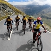
Small Group Size
Our batch size for cycling expeditions is capped at 12 with the expedition leader and participant ratio of 1:6. This ratio, in our years of experience, has proven to deliver the best cycling experience for individuals as well as groups. Capping the size of the group ensures individual attention to each participant so that no signs of distress or need during the expedition go unnoticed. It also helps to form a more cohesive cohort with better group energy which helps define the rhythm and pace of days on the expedition.
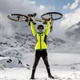
Experienced Expedition Leaders
We follow a rigorous regime of hiring and training our experts in the field. Each expedition leader is a certified mountaineer with years of experience in the field. In addition to their qualification, they also go through practical and situational training to tackle any and all kinds of sudden conditions that may present themselves on the ground. Being unpredictable is the core nature of the mountains but being ready for any circumstance as best as possible is a controllable asset that we try to nurture. Our field experts are also trained in basic medicine and first-aid response. Watch: Forerunners - The Making of An Expedition Leader At Bikat Adventures
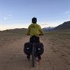
Guided Progression
Since Bikat Adventures is a learning-based organization, we help you climb up the ladder of difficulty within the sphere of outdoor adventure systematically. Our on-ground training modules are designed to handhold you through the upskilling process so that you are ready to take on bigger challenges.
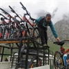
Equipment Quality and Check
All the gear used on our expeditions is tried and tested, maintained for good quality, and is overall top-notch in quality and condition. We are continually looking to obtain the best of everything there is in the market so as to ensure optimum safety.
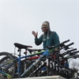
Support Systems
Along with the staff you see on-ground, we have a team of superheroes working in the background to give you the best experience possible. Our background team also comprises local staff from each area who know the region best. Having local support helps with studying the area, pre-planning, execution, and in receiving timely support in case of emergencies in these remote locations.

Communication
Our on-field staff is in constant contact with our teams based in primary locations so as to eliminate any avoidable delay in reaching additional help and support when required. We try to use the best tools for communication available, including satellite phones, in regions where they are not restricted.
What our customers Say


Cancellation Policy
Cash refund
Cancellations up to 60 days prior to departure date
Between 60 days upto 30 days prior to departure date
Between 30 days upto 10 days prior to departure date
Less than 10 days prior to departure date
Voucher refund
Cancellations up to 30 days prior to departure date
Between 30 days upto 15 days prior to departure date
Between 15 days upto 10 days prior to departure date
Less 10 days prior to departure date
Please Note:
- Cash refund is applicable only in case of bookings made without using any promotional offer code or Cancellation Vouchers or Discounts. "Cash Refund will be processed in 7-14 working days."
- This is only a brief of cancellation terms. For finer details please refer Detailed Cancellation Policy.
Blog Posts
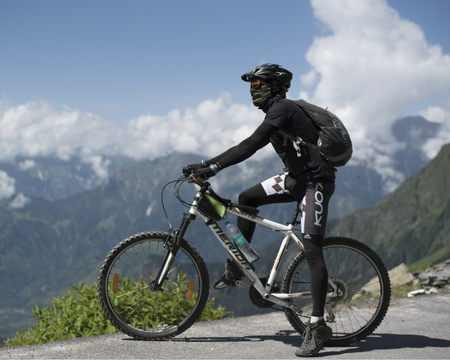
How to select a Himalayan Mountain Bike - Beginner's Guide
Know How
How to select a Mountain Bike
If you are a beginner and planning to get yourself a new MTB, then I know how bewildered you must be right now, my friend.
What specs to look for? What brands to go with? How much do you need to spend on your b...
Read full

Know How
Mountain Biking - A Complete Nutrition Guide
I am a firm believer of the fact that nutrition is beyond weighing scales. The relationship with healthy food becomes non-negotiable when it comes to Mountain Biking (MTB), because of the ever cha...
Read full
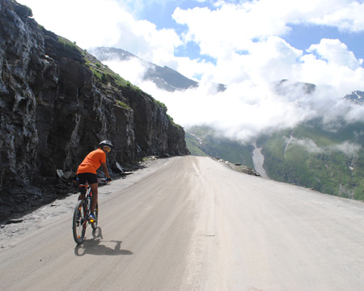
Practice Schedule For Manali Leh Cycle Expedition
Know How
This six week practice schedule can be followed by people planning to do Manali Leh Cycling Expedition. The expedition itself takes ten days & crosses over many high altitude passes. The expedition route comprises of different type of terrains &a...
Read full
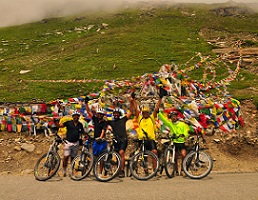
Why Manali-Leh Cycling is the next big thing for all the cyclists out there
Informative
It’s been a year since you joined the cyclist group in your city. You don’t remember exactly why you ventured into cycling. Maybe, it was mostly to break the ennui.
But you know exactly what made you stay- the thrill it gives and how hap...
Read full
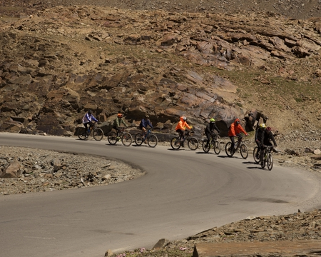
How To Prepare For Mountain Biking
Know How
How to prepare for the Mountain Biking!
Mountain Biking is as much about fitness as it is about skill. Strength and endurance can be said to be the two wheels of the Mountain Bike which expedite the completion of the ride and this can be bui...
Read full
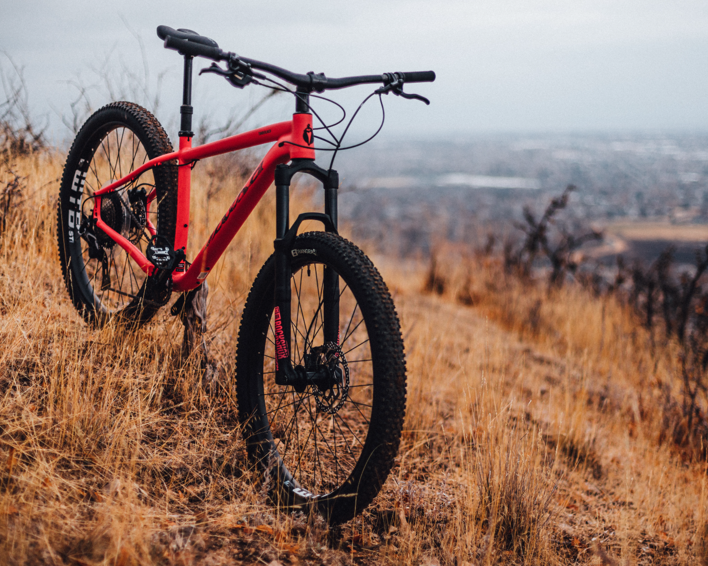
How to Use a Mountain Bike
Know how
Getting accustomed to riding a mountain bike and knowing the basics of it while riding in the mountains is important before embarking on any cycling expedition. While it might appear pretty straightforward, improper use of gears could make your journ...
Read full
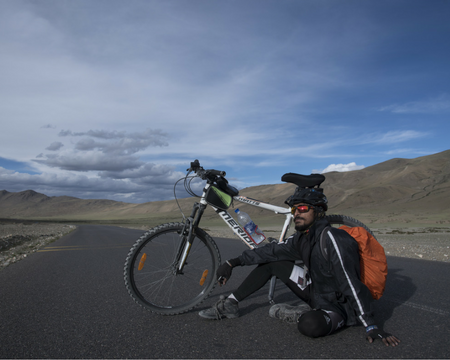
MTB Clothing & Gear: What to Wear
Know How
Mountain Biking - Clothing and Gear 101
MTB rides in the mountains like Himalayas pose many challenges for the riders like saddling uphill in thin air and harsh weather, riding downhill at high speeds in windy conditions, and negotiating thr...
Read full
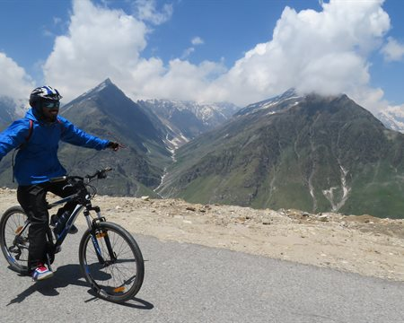
Manali To Leh Cycling Expedition Is Epic And Challenging
Informative
Let’s define “epic,” shall we?
Epic: adjective I ep·ic I \ˈe-pik\
1. Extending beyond normal or ordinary
2. A work of art
The decision to ride a bicycle 561 kilometer...
Read full
Similar Adventures
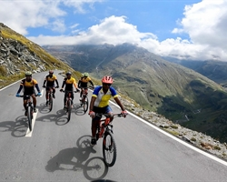
Saach Pass Cycling Expedition
An Off-beat Cycling Expedition in Himachal
Himachal
10 days
BRS 6
4390 m
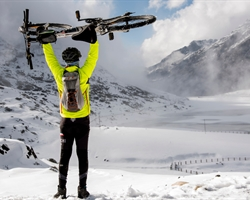
Tawang Bum La Cycling Expedition
Explore the Best Of Arunachal Pradesh on Two Wheels
Arunachal Pradesh
11 Days
BRS 6
4630 m
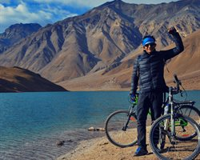
Manali Chandratal Cycle Expedition
Himachal
6 Days
BRS 5
4250 m


{kind=link}
{kind=link}
{kind=link}
{kind=link}
{kind=link}
{kind=link}
{kind=link}
{kind=link}
{kind=link}
{kind=link}
{kind=link}
{kind=link}
{kind=link}
{kind=link}
{kind=link}
{kind=link}
{kind=link}
{kind=link}
{kind=link}
{kind=link}
{kind=link}
{kind=link}
{kind=link}
{kind=link}
{kind=link}
{kind=link}
{kind=link}
{kind=link}
{kind=link}
{kind=link}
{kind=link}
{kind=link}
{kind=link}
{kind=link}
{kind=link}